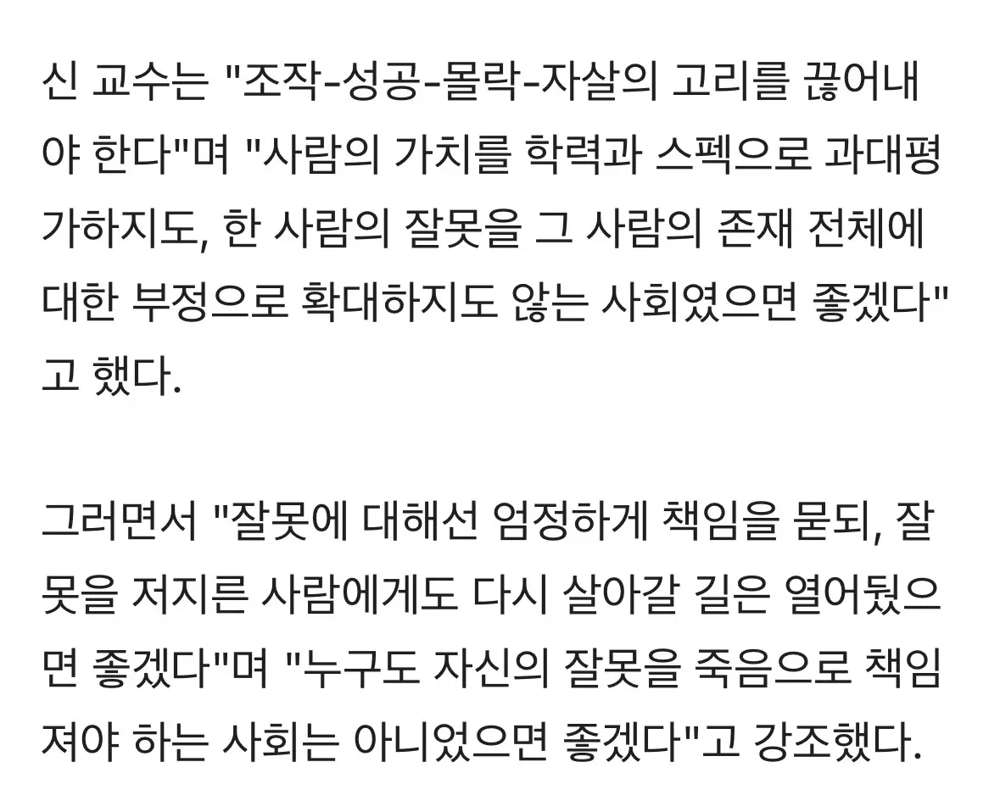

남의 스펙 가지고 열광한 적도 없고 시기한 적도 없으며 죽길 바랐던 적도 없음
안면 있거나 친한 사이였으면 자수하라 권하고 마 국밥이나 한그릇 묵자 했을 거임
솔직히 저런 쉴더들/불편충들 때문에
ai 제대로못잡은거고 그걸로 진우가 죽은거고
틀딱들이 사기죄를 죄라 생각안해서
통계적으로 이상할만큼 사기범죄가 많은나라고
사이비가 많은나라니 그걸흐린눈하며 봐준
틀딱들 교수책임인듯 ㅇㅇㅇ 본인 책임이라 하는거임
사과하고 반성하며 살아라
아니 사기쳤잖아요
책임은 여러형태로 나타나며
자수할수도 해외도피도 선택지였음
자살도 그 책임중하나고
그말대로라면 아무것도 모르고 사기당한건데 사기당했다고 비난하는건가?사람들의 더 나은 삶에대한 행복추구권을 사용한것인데 그래서 선택한건데그걸 사기꾼한테 사기당했다고 비난하는거라고 생각드는데
.그 생각을 확대하면 전세사기당한사람도 편히 몸뉘울곳찾은거 뿐인데 사기당했으니 비난해야한다는소리네..
조용히 있던 사람 끄집어내서 스포트라이트 비춘게 아니라 본인이 무대로 뛰쳐나옴..
뭔 개좆같은 애미뒤진 소리니 교수새끼야
RAGE BAIT에 먹이주지마라
플랫폼 홍보하는거임
걍 잠수 타고 디지털 디톡스 진짜로 실천했으면 뭐라도 하면서 살았지
한국인들은 잘못 없지 씨발아
살 길 열어 줬는데 닫고 문까지 잠그고 뒤진 놈
조작-성공-몰락-자살의 고리를 끊자고?
조작을 안하면 되잖아? 조작을 안하면 고리도 안생기는데?
정직하게 살아가는 사람 다 병신만드는 소릴하네
누가 죽으라고 협박했나 지가 책임지기 싫으니까 죽어버린건데 대부분 사람들이 죽은걸 환호하지 않을텐데? 안뒤지고 경찰조사받아서 지가 어떻게 치팅했는지 명명백백히 밝혀야 리트냥이 본인 책임을 다한건데
깨어있는척 하려고 시체팔이 들어가신 분들보단
걍 단순하게 병신 죽은거에 즐거워하는 사람들이 낫다
근대 궁금한게 저늠이 시험조작으로 성적등수가 올라갔으면 무고한한명이 떨어졌다는소리아님?
저런 사람들 때문에 우리 사회에 부정 부패가 넘쳐나는거지
부정한 자에게 안타까움을 느끼기에 앞서 그로 인해 피해입었을 피해자를 먼저 생각해야지
좆까